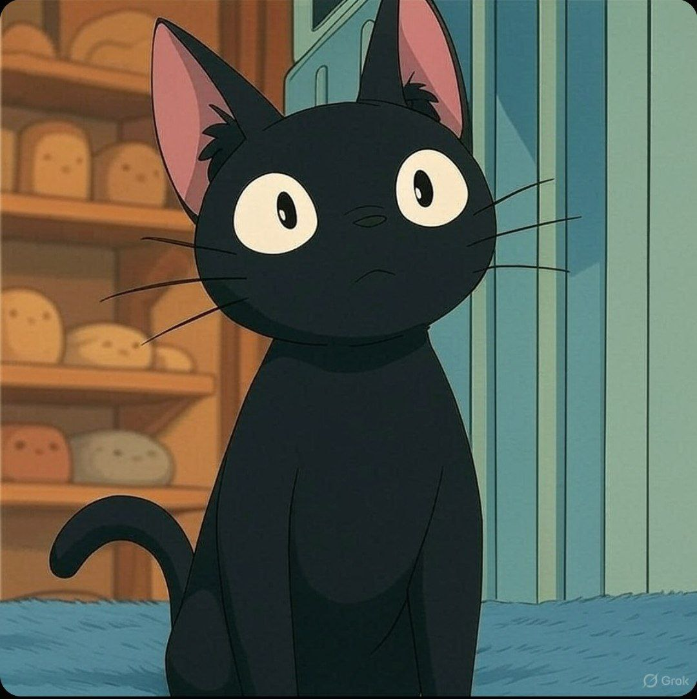

🐾 JIJI - ジジ 🐾
ジジは一人前の魔女になるための修行中のキキのお供だ。ある時、男の子の誕生日プレゼントに猫のぬいぐるみのふりをすることになった。彼にそっくりな本物の猫のぬいぐるみは、森で迷子になってしまったのだ。ジジにはリリーという白猫のガールフレンドもできた。クレジットでは、ジジとリリーが一緒に子猫を産んだことが描かれている。
Contract (CA): BWRqwR4WynDdnz9ezkSj2Cf3NPLnfrXGpgGCJnb1RxJf
🌐 Join Telegram
📊 Chart on Dexscreener